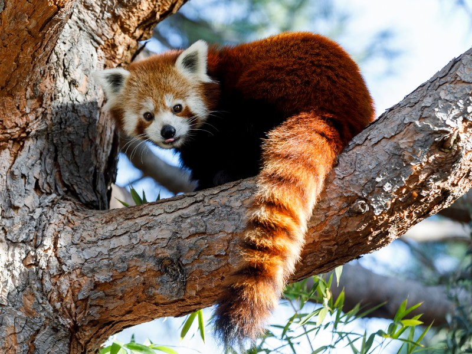
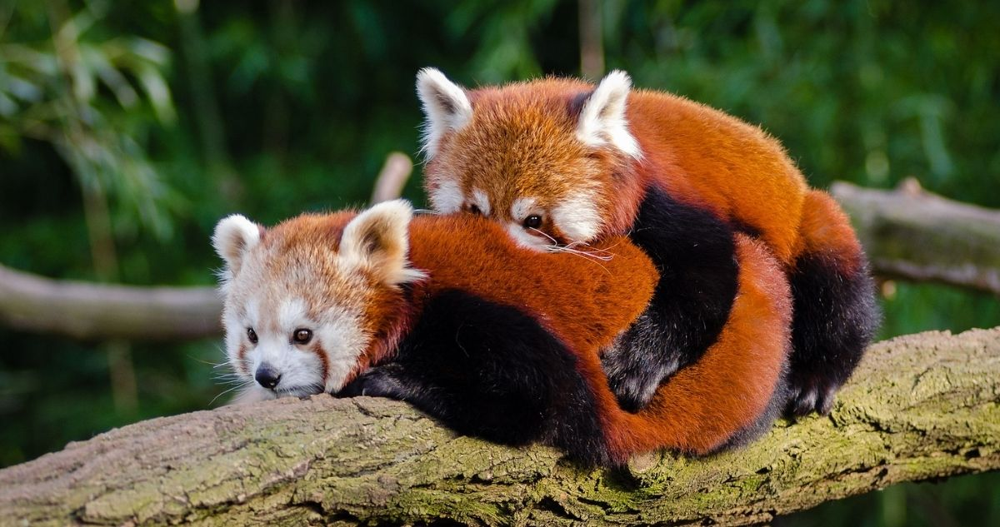

Caracteristicas
Miden de 30 a 60 cm. Los machos pesan de 4,5 a 6,2 kilogramos, las hembras de 3 a 4,5 kg. Tienen el pelaje de color marrón rojizo, largo y suave en la parte superior, que se vuelve oscuro en la parte inferior. En el rostro tiene manchas de color blanco similares a las de un mapache, pero cada individuo tiene diferentes marcas faciales. Su cabeza es redondeada con orejas rectas de mediano tamaño, nariz negra, y los ojos muy oscuros, casi negros. Su cola, larga y felpuda con seis anillos de color ocre o rojo, le proporciona un equilibrio y una excelente habilidad sobre los resbaladizos musgos y líquenes que cubren los árboles. Las patas son cortas y de color negro. También tiene garras retráctiles y, como el panda gigante, un "falso pulgar", que es en realidad una extensión de los huesos de la muñeca. Posee un pelaje grueso en la planta de los pies que ofrecen protección contra el frío y oculta los genitales.
Habitat
Los pandas rojos son nativos del Sureste de Asia; Himalaya, el sur del Tíbet, Bután, el noreste de India, de la provincia de Yunnan y las montañas Hengduan de la provincia de Sichuan en China.
Los pandas rojos viven en climas de temperatura moderada (10-25 °C), con pocos cambios anuales en las zonas boscosas; prefieren las zonas montañosas de 1800-4800 m s. n. m., especialmente los bosques templados de coníferas con viejos árboles de rododendro y, por supuesto, bambú. Comparten el hábitat con otro especialista en bambú, el panda gigante en China (Reserva de Wolong). Los pandas rojos habitan en viejos árboles huecos. A menudo se pasan el día tumbados en las ramas altas de los árboles; se alimentan más activamente por la mañana y por la noche.
Dieta
Su dieta se compone de alrededor de dos tercios de bambú, pero también come bayas, frutas, hongos, raíces, líquenes y se sabe que complementan su dieta con crías de ave, huevos, insectos y pequeños roedores en algunas ocasiones. Pero en cautiverio comen fácilmente carne. Son excelentes escaladores y realmente hace poco más que comer y dormir debido a su dieta baja en calorías. Los troncos de bambú son digeridos con más facilidad que las hojas y con una mayor digestibilidad en el verano y el otoño, intermedia en la primavera, y baja en invierno. Esas variaciones se correlacionan con el contenido nutricional de bambú. El panda rojo digiere mal el bambú, en especial la pasta y los componentes de la pared celular, ya que su digestión microbiana desempeña solo un papel secundario en su estrategia digestiva. El tránsito de bambú por el intestino del panda rojo es muy rápido (2-4 horas). Para sobrevivir en la dieta de mala calidad, el panda rojo ha de elegir a los bambúes de alta calidad y comer gran cantidad de hojas y troncos que pasan por el tratamiento digestivo regularmente rápido para maximizar el aporte de nutrientes.
Reproduccion
Los pandas rojo adultos ambos sexos pueden aparearse con más de una pareja durante la época de apareamiento, pero raramente interactúan entre ellos fuera de esa temporada. El apareamiento se lleva a cabo entre mediados de enero hasta principios de marzo y, las crías nacen entre junio y finales de julio. El periodo de gestación varía de 112 a 158 días y la hembra puede dar a luz de uno a cuatro cachorros, los cuales nacen ciegos y pesando 110 a 130 gramos. Días antes del parto, la hembra comienza a reunir materiales con los cuales confeccionará el nido. Este casi siempre está ubicado en un tronco hueco o la grieta de una roca.
Población de Pandas Rojos por Año
| Año | Población de Pandas Rojos |
|---|---|
| 2015 | 10,000 |
| 2016 | 10,443 |
| 2017 | 10,716 |
| 2018 | 11,223 |
| 2019 | 11,665 |
| 2020 | 12,035 |
| 2021 | 12,281 |
| 2022 | 12,507 |
| 2023 | 12,802 |
| 2024 | 13,068 |
Mas info sobre su conservacion Ver más
Para apoyar la conservacion de esta especie Ver más
Mas info sobre la especie Ver más